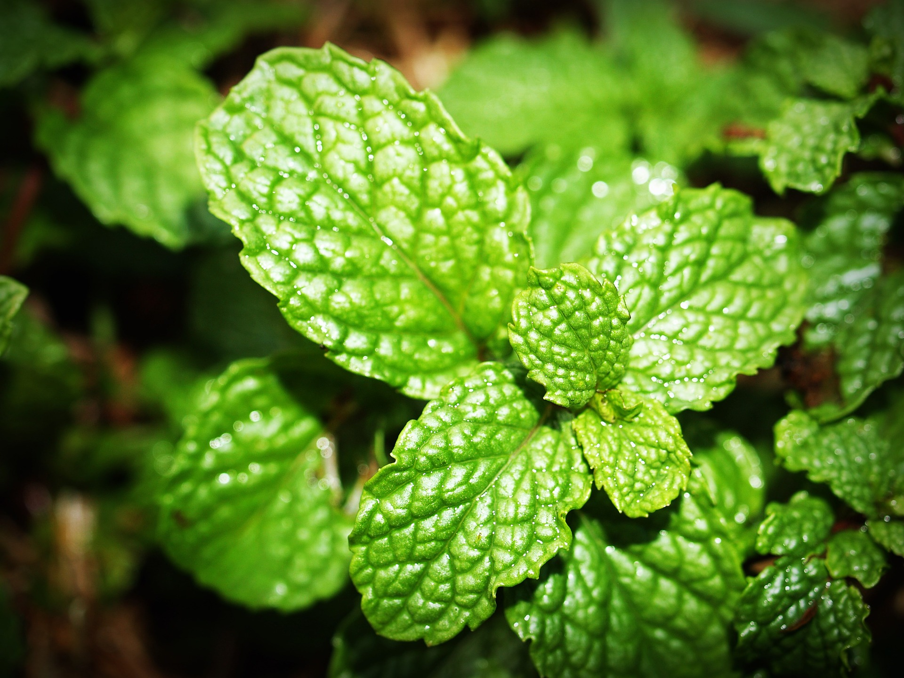

Herbal Supplements and Nutrition
What we put into our body can make all the difference in how we function, and that includes brain function. After all, we are what we eat, right? There are several herbal supplements that have been shown to enhance memory and improve focus. Further, we know inflammation in the body can contribute to brain fog, which isn't good when you're trying to perform a task like coding, that takes a lot of focused attention. See below for the biggest culprits of inflammation in the body as well as a list of some anti-inflammatory foods.
Helpful Herbs for Focus and Memory
Gingko
Gingko biloba is an antioxidant-rich herb of Chinese origin that is used to enhance brain health and preserve memory. Most supplements are made using leaf extract, but some are made from the seeds of the plant. Gingko biloba increases blood flow to the brain.
Gotu Kola
Gotu kola is a member of the parsley family and is used to balance out the nervous system. It not only aids in stress reduction and reducing anxiety, but it also improves mental alertness and memory. This herb is a relaxant and is caffeine-free, despite the word
kola in its name.
Ginseng
Ginseng contains
ginsenosides which have anti-oxitant and anti-inflammatory functions and also aid in brain function by stimulating the release of acetylcholine which is a neurotransmitter associated with learning and memory. When taken together with Gingko, both working and long-term memory are enhanced. Ginseng also boosts mood and increases resilience to stress.

Peppermint
Peppermint increases alertness, memory and cognitive function. The scent or taste of peppermint stimulates the hippocampus in the brain which plays an important role in memory. It also slows the release of the stress-hormone cortisol and therefore has a calming effect on the body.